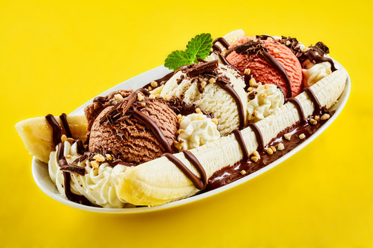

Banana split is a classic dessert consisting of a lengthwise-cut banana topped with scoops of strawberry, vanilla, and chocolate ice cream. Typical garnishes include nuts, fruits, whipped cream, and a cherry on top. The dessert is traditionally served in a long dish called a boat.
Meal prep time : 10 minutes
Servings : 1